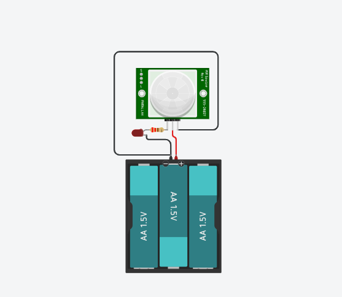
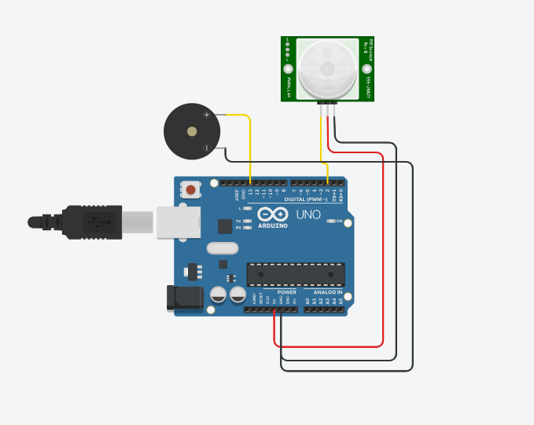

Detector de Movimento com Alerta (LED ou Buzzer do Vape)


Objetivo
Criar um sistema simples de alarme que acende um LED (ou toca um buzzer) quando detectar movimento, reaproveitando peças de um vape.
Materiais Necessários
- Arduino Uno (ou similar) - 1 unidade
- Sensor de movimento PIR - 1 unidade
- LED ou buzzer (reaproveitado do vape) - 1 unidade
- Resistor 220Ω (caso use LED) - 1 unidade
- Jumpers - Alguns
- Protoboard - 1 unidade
- Cabo USB (ou bateria com boost) - 1 unidade
Passo a Passo da Montagem
Ligações:
Sensor PIR:
- VCC → 5V do Arduino
- GND → GND
- OUT → pino digital 2
LED/Buzzer:
- Pino positivo do LED ou buzzer → pino digital 13
- Pino negativo → GND
- Use resistor de 220Ω se for LED
Código
const int sensorPIR = 2; // Pino do sensor de movimento
const int alarmePin = 13; // LED ou buzzer
void setup() {
pinMode(sensorPIR, INPUT); // Sensor como entrada
pinMode(alarmePin, OUTPUT); // Saída do alarme
Serial.begin(9600); // Para debug no monitor serial
}
void loop() {
int movimento = digitalRead(sensorPIR); // Lê o sensor
if (movimento == HIGH) {
// Movimento detectado
digitalWrite(alarmePin, HIGH); // Liga LED ou buzzer
Serial.println("Movimento detectado!");
delay(2000); // Mantém por 2 segundos
} else {
digitalWrite(alarmePin, LOW); // Desliga
}
}
Explicação do Funcionamento
Este projeto funciona da seguinte maneira:
- O sensor PIR detecta movimento.
- Se detectar alguém, acende o LED ou aciona o buzzer do vape.
- Fica ativo por alguns segundos, depois volta a escanear.
Exemplo de entrada/saída:
- Pessoa passa na frente do sensor: LED acende ou buzzer toca por 2 segundos.
- Nada na frente: LED/buzzer fica desligado.
Vídeo Demonstrativo
Dicas e Variações
Considerações importantes para este projeto:
- O tempo de detecção e desligamento pode ser ajustado com delay().
- Se for usar o buzzer do vape, ele pode precisar de corrente maior – se for o caso, usa um transistor.
- A sensibilidade e tempo do PIR podem ser ajustados em trimpots na placa.